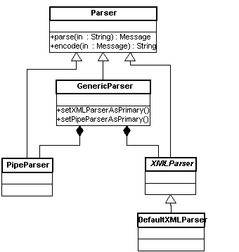

Parsing and Encoding Messages
HAPI translates between HL7-encoded Strings and Message objects. The String format is required for sending messages over the network or storing them in a file. The object format is convenient for reading and setting individual data fields.
- Parsing = converting message string to Message object.
- Encoding = converting Message object to message string.
Both of these actions are performed with a ca.uhn.hl7v2.parser.Parser object.
Standard HL7 Encodings
The bulk of the HL7 standard defines the abstract structure of individual messages (e.g. what segments and fields they have, and what they mean). In order to actually send a message over a network, it must be encoded as a sequence of bits. A small section of the HL7 standard is dedicated to defining how this is done. There are two standard encodings:
- The "traditional encoding". This is a method of serializing a message using special delimiter characters to distinguish various message elements. It looks like this: MSH|^~\&|foo|foo... * The "XML encoding". This method uses an XML syntax to identify parts of a message. It looks like this: <MSH><MSH.1>|<MSH.2>^~\&</MSH.2>... At the time of writing, the XML encoding has not been finalized. It is expected to become an official standard in fall 2002.
The Parser Classes
There are several Parser classes in HAPI, which work together to support both the traditional and XML encodings. The following diagram illustrates how they are related:
Programming with Parsers
The following code example demonstrates how to:
- Parse a "traditionally encoded" message string
- Change a value in the message
- Encode the message in XML form
import ca.uhn.hl7v2.parser.*; import ca.uhn.hl7v2.model.Message; import ca.uhn.hl7v2.model.v24.message.ACK; public class ParserDemo { public static void main(String args[]) { //for demo purposes, we just declare a literal message string String ackMessageString = "MSH|^~\\&|foo|foo||foo|200108151718||ACK^A01^ACK|1|D|2.4|\rMSA|AA\r"; //instantiate a PipeParser, which handles the "traditional encoding" PipeParser pipeParser = new PipeParser(); try { //parse the message string into a Message object Message message = pipeParser.parse(ackMessageString); //if it is an ACK message (as we know it is), cast it to an // ACK object so that it is easier to work with, and change a value if (message instanceof ACK) { ACK ack = (ACK) message; ack.getMSH().getProcessingID().getProcessingMode().setValue("P"); } //instantiate an XML parser XMLParser xmlParser = new DefaultXMLParser(); //encode message in XML String ackMessageInXML = xmlParser.encode(message); //print XML-encoded message to standard out System.out.println(ackMessageInXML); } catch (Exception e) { e.printStackTrace(); } } }Note that to run this demo you must have the Xerces XML Parser in your classpath.